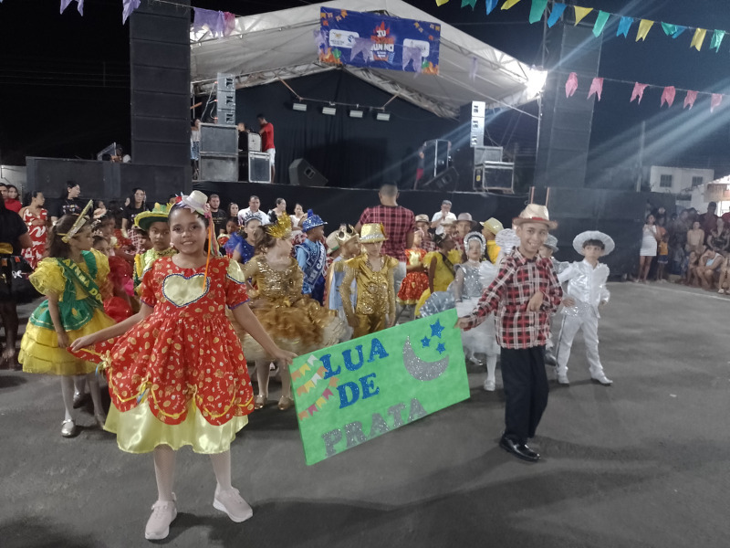

Festa Junina 2025 – Apresentação de Gala
Na noite desta sexta-feira, 20 de junho de 2025, foi realizado o IV Festival da Festa Junina na cidade de Prata do Piauí. O evento contou com a presença das escolas do município e com apresentações especiais de cidades vizinhas.
A Escola Municipal Ana de Azevedo Campelo foi um verdadeiro destaque, encantando o público com um espetáculo do início ao fim. Os alunos protagonizaram momentos de muita alegria, cultura e tradição, resgatando os elementos típicos das festas juninas com brilho e dedicação.
Os anfitriões da noite, a aluna Sofia e o aluno Esdras Vinícius, representaram com orgulho todos os estudantes da escola, conduzindo a apresentação com simpatia e entusiasmo.
Para todos os nossos pequenos artistas — e para os familiares, professores e comunidade presente — foi uma noite mágica, que ficará para sempre guardada na memória de cada um.